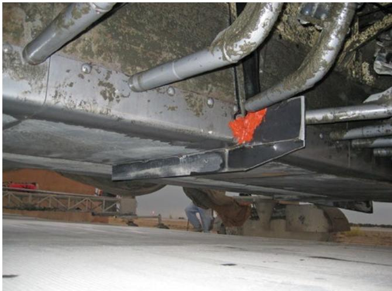
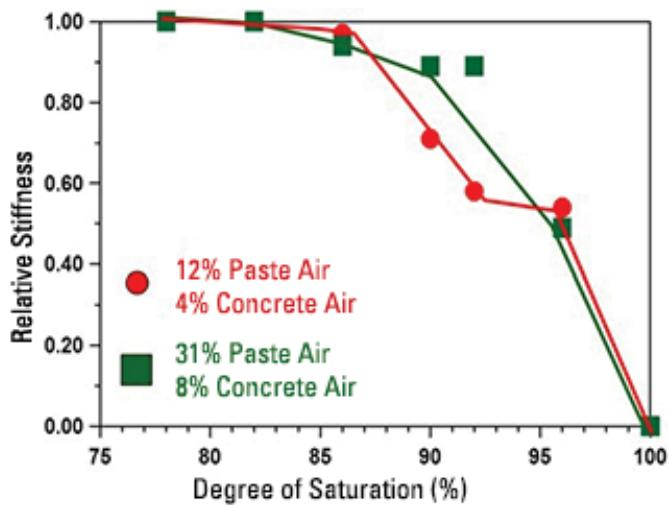
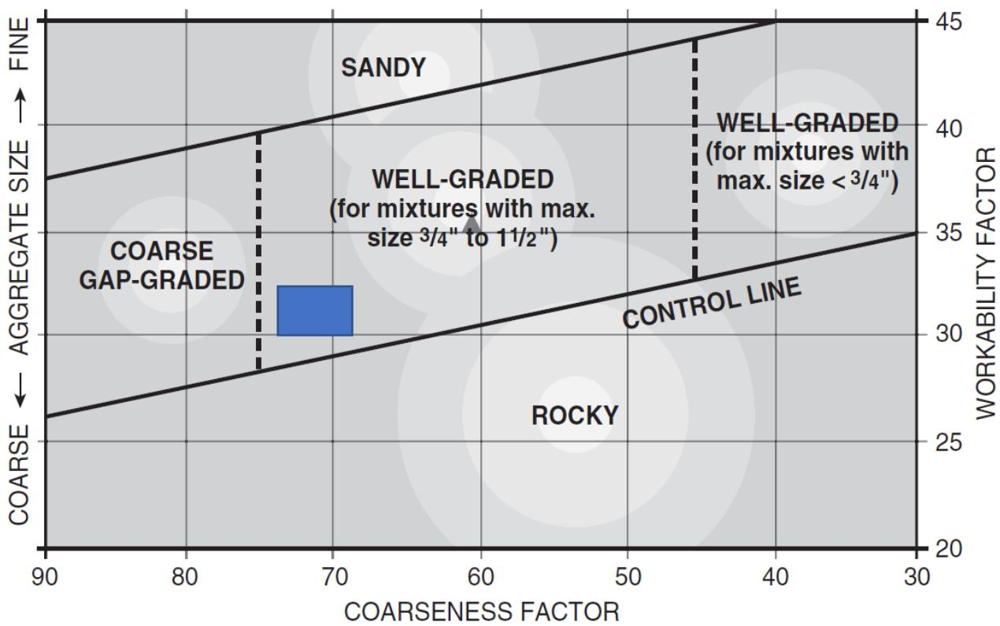

Concrete Testing
Concrete testing is a systematic application of standardized procedures designed to evaluate the physical, mechanical, and chemical properties of concrete in both its fresh and hardened states. Fresh-state assessments monitor workability, air content, temperature evolution, and setting characteristics to ensure proper placement and uniformity during production [1] [3]. Hardened-state evaluations quantify structural integrity through measurements of compressive strength, tensile capacity, durability, and dimensional stability using physical specimens or non-destructive techniques [1] [2] [3]. The process also includes specialized pavement testing to verify load transfer efficiency across joints and surface friction coefficients under simulated traffic conditions [2].
Sources (4)
Key findings
- Concrete performance depends on both total air content and its distribution, with quality assessed using the Super Air Meter (SAM) number and spacing factor rather than relying solely on the water-to-cement ratio [1] [4].
- Load-transfer efficiency testing provides a quantitative measure of joint performance by comparing deflections across joints, with results classified into categories ranging from excellent to very poor based on specific percentage thresholds [2].
- Falling-weight deflectometer measurements identify voids and non-uniform support beneath concrete slabs by analyzing load-deflection lines and corner-to-interior support ratios [2].
- Aggregate gradation significantly influences mix variability, with poorly or gap-graded blends driving unacceptable performance inconsistencies that require tighter control limits than standard specifications allow [3].
- Control charts enable the proactive identification of assignable-cause variations in production data, allowing for corrective actions before process instability leads to out-of-spec concrete [3].
- Rapid moist-sieve sampling offers early warnings regarding aggregate gradation issues, reducing the lag inherent in standard testing methods and facilitating quicker mix adjustments [3].
- Parallel-plate rheometry provides direct, quantitative indicators of fresh-mix quality by monitoring shear stress rise over time to track silicate hydration rates [1].
- The ring test serves as a predictive tool for field cracking risk by measuring the onset of cracking in fully restrained specimens under laboratory conditions [1].
Fresh and Hardened Concrete Testing Methods
Concrete testing employs standardized procedures to evaluate material properties at both the fresh and hardened stages, ensuring compliance with design specifications [1]. Fresh-state assessments focus on workability, setting characteristics, air content, and early-age thermal behavior to predict performance during placement [1]. Hardened-state evaluations quantify mechanical strength, durability indicators, and dimensional stability through tests on cured specimens [1].
The relationship between these mechanical properties is illustrated in the following figure.
 Comparison of compressive and flexural strength correlations, based on equations 3.1 and 3.2 [1]
Comparison of compressive and flexural strength correlations, based on equations 3.1 and 3.2 [1]
The figure displays a graph plotting Flexural strength against Compressive strength for concrete. Two linear models are compared: one defined by the equation MR = 9 * sqrt(f’c) and another by MR = 2.3 * (f’c)^(2/3).
Research problem — Current concrete testing practices face significant challenges in ensuring quality control and durability due to the poor reproducibility of early hydration assessments across different laboratories [1]. There is a critical need for reliable methods to detect abnormal chemical reactions during cement hydration, as conventional monitoring often fails to identify deviations that govern long-term strength and durability [1]. Engineers lack standardized approaches to quantify the rate of fresh concrete stiffening and accurately assess cracking risks in fully restrained specimens, which hinders effective mix design adjustments and construction scheduling [1].
State of the art — Contemporary concrete testing employs a multi-modal approach that integrates rapid field diagnostics with laboratory-grade analytical techniques to monitor early-age hydration, workability, and long-term performance [1]. Standard on-site procedures focus on verifying mill certifications and measuring semi-adiabatic temperature, slump loss, setting time, and air-void uniformity to provide real-time quality control before placement [1]. Calorimetric monitoring remains central for diagnosing hydration kinetics, while rheological methods using parallel-plate rheometers offer quantitative insights into silicate hydration progress through time-dependent shear stress measurements [1]. Workability and cracking potential are assessed using mechanical restraint tests like the ring test alongside various consistency evaluations such as mini-slump cone, Vebe, and static Kelly-ball penetration tests [1]. Air content is quantified via pressure drop measurements in airtight cells, with the Standard Air Meter (SAM) applied at multiple pressures to evaluate spacing factor and air-void system quality during paving [1]. Maturity testing according to ASTM C1074 utilizes embedded temperature sensors and pre-established curves to predict in situ strength development, complemented by surface resistivity for permeability and non-destructive pulse-induction thickness measurement [1].
The following figure illustrates how specific chemical reactions contribute to the early heat spike observed during cement hydration.
 Heat evolution curve of cement hydration showing the initial reaction, dormant period, and acceleration phase. [1]
Heat evolution curve of cement hydration showing the initial reaction, dormant period, and acceleration phase. [1]
The figure displays a plot with Heat on the vertical axis and Time on the horizontal axis, illustrating the thermal profile of cement hydration. A sharp initial peak is followed by a prolonged period of low heat generation known as the dormant period, which lasts two to four hours and provides time for transport and placement.
Findings from the reports
- Evaluated fresh-mix quality and early-age performance using direct quantitative indicators such as shear stress rise in paste, ring test cracking times, and the VKelly index [1].
- Demonstrated that earlier laboratory cracking signals a higher risk of field cracking when using the ring test for fully restrained specimens [1].
- Established that vibration response serves as a reliable gauge of field placeability, corroborated by Box-test results [1].
- Identified visual observation of coarse particle movement as the practical control method for segregation in the absence of standardized tests [1].
- Showed that surface-resistivity measurements directly signal lower permeability, with higher kohm-cm values indicating better durability [1].
- Measured pavement thickness using pulse-induction devices and compared the results against project specifications to assess compliance [1].
Novelty & rigor — The research introduces three novel non-destructive evaluation tools for fresh and hardened concrete, including a vibration-augmented Kelly ball test that quantifies dynamic response in stiff mixes [1]. It proposes an interpretive framework called the Tarantula curve to partition sieve-retention data and link it to qualitative vibration feedback for slip-form placement acceptance [1]. The approach utilizes pulse-induction technology with a pre-placed metal target to provide rapid, calibrated pavement thickness measurements as an alternative to destructive coring [1].
The following figure illustrates the practical application of these vibration-based methods by showing an array of vibrators positioned under a slipform paver.

An array of vibrators under a slipform paver [1]The image displays the underside of heavy machinery, specifically showing several cylindrical metal tubes mounted to the chassis. These components are identified as vibrators used for consolidating concrete during slipform paving operations. This equipment is essential for fresh-state assessments as it ensures proper placement and uniformity by removing air voids.
Reported values
| Parameter | Value | Context | Source |
|---|---|---|---|
| coarse sand retained | >15% | Tarantula curve limits for slipform placement | [1] |
| fine sand retained | 24–34% | Tarantula curve limits for slipform placement | [1] |
| SAM value limit | <0.20 lb/in² | acceptable air-void system | [1] |
| thickness measurement accuracy | 0.08 in. | MIT-SCAN-T3 device reported pavement thickness compared to measured core lengths | [1] |
| time to critical saturation | >30 years | durability assessment at 85% critical saturation | [1] |
| VKelly index | 0.6 to 1.1 in./√s | slipform paving mixtures | [1] |
Implications — Quality control protocols must evolve into multi-parameter, real-time systems that actively drive mix-design adjustments and on-site construction decisions to ensure long-term durability [1]. Laboratories should integrate rheometric monitoring and rapid workability indices like VKelly into proportioning workflows to provide immediate feedback on mixture behavior and prevent equipment incompatibility [1]. Early warning indicators such as ring test cracking or visual segregation must trigger immediate re-evaluation of mix proportions, curing practices, or reinforcement strategies before construction proceeds [1].
Limitations — Certain indices like the VKelly index are primarily suited for laboratory mixture proportioning rather than serving as universal predictors of field performance due to their sensitivity to aggregate gradation and paste content [1]. Some evaluation methods lack standardization or rely on subjective visual observations, which limits their reliability and applicability across different placement techniques such as slip-form operations [1]. Test conclusions may be unreliable if ambient environmental factors like temperature, wind speed, and humidity are not systematically recorded and tracked during the testing process [1].
The following figure illustrates how the VKelly index is derived from the relationship between penetration depth and root time.
 Plot of penetration depth versus vibration duration showing the linear relationship used to determine the VKelly index. [1]
Plot of penetration depth versus vibration duration showing the linear relationship used to determine the VKelly index. [1]
The figure displays a scatter plot with a linear regression line, where the vertical axis represents penetration depth and the horizontal axis represents vibration duration in root seconds.
Evidence: 1 report (1 primary)
Quality Assurance and Testing Techniques
Quality assurance in concrete pavements relies on standardized testing procedures to evaluate structural integrity, load-transfer capability, and surface friction [2]. Load transfer efficiency measures how effectively joints or cracks convey traffic loads across discontinuities by analyzing vertical deflection differences under ambient conditions [2]. Non-destructive electromagnetic techniques are employed to determine layer thicknesses and locate embedded steel elements without damaging the pavement structure [2]. Friction assessment methods simulate various vehicle dynamics, such as locked-wheel braking or controlled side-force cornering, to quantify surface skid resistance [2].
The figure below illustrates friction measurements taken using the California CT-342 device at various angles relative to the pavement centerline.
 Friction measurements via the California CT-342 device at various angles relative to the centerline of the pavement [2]
Friction measurements via the California CT-342 device at various angles relative to the centerline of the pavement [2]
The figure plots the friction index relative to longitudinal travel against the deviation angle for four distinct concrete surface textures: CDG, Random transverse tined, Astro turf, and Grooved. While the grooved texture shows a significant increase in friction as the vehicle deviates from the centerline, the other textures remain relatively stable or decrease slightly.
Research problem — Traditional quality control methods often provide only retrospective data, which delays corrective actions and allows mix variability to compromise pavement performance before it is detected [3]. Measurement inaccuracies in load-transfer efficiency and dowel-bar placement can obscure structural deficiencies and lead to premature distress or ineffective repairs [2]. The inability to reliably locate subsurface reinforcement and measure slab thickness without destructive coring hinders the planning of safe and effective preservation treatments [2].
State of the art — Quality assurance for airport concrete production relies on NRMCA-certified stationary central-mix plants that adhere to ASTM C94 or C65 standards, with real-time process control achieved through aggregate moisture sensors and monitoring of plant amp-meter readings [3]. Industry practice utilizes real-time control charts for the Coarseness Factor and Workability Factor to monitor mixture consistency, supported by recent fast-track sieve analysis methods that provide early indications of aggregate drift [3]. The evaluation of concrete pavement joints and cracks is primarily based on load-transfer efficiency testing conducted at temperatures below 70°F to minimize thermal influences [2]. Subsurface support conditions are routinely assessed using falling-weight deflectometers, where specific deflection thresholds indicate voids or non-uniform foundation support [2]. Magnetic imaging tomography systems represent the current state-of-the-art for non-destructive evaluation, enabling precise verification of dowel-bar placement and rapid measurement of slab thickness with high accuracy [2].
The following figure illustrates typical joint details used in airport concrete pavements.
 Joint details used in airport concrete pavements (FAA 2021). [3]
Joint details used in airport concrete pavements (FAA 2021). [3]
The figure displays cross-sectional diagrams of various joint types, including contraction joints with tie bars and dowels, construction joints, isolation joints with thickened edges, and a detailed view of sealant placement. These details illustrate the physical components required for pavement joints, which are integral to ensuring optimal performance by allowing independent slab movement during expansion and contraction.
Findings from the reports
- Effective concrete testing on airport pavements requires a rigorously certified batch plant located near the paving site, comprehensive trial batches to establish baseline workability, and formal uniformity testing to quantify consistency [3].
- Continuous quality control must monitor aggregate moisture in each batch and adjust water additions to keep the mixture within specified limits [3].
- Concrete performance depends on maintaining a well-graded aggregate blend, as poorly or gap-graded mixes drive unacceptable variability [3].
- Tighter action limits are necessary because broader regulatory limits mask out-of-control conditions in concrete production [3].
- Rapid moist-sieve sampling of critical sieves provides early warnings that reduce the lag inherent in standard testing methods [3].
- Control charts enable users to visualize data trends, identify process issues, and proactively implement corrective actions before the process becomes unstable [3].
- Load-transfer efficiency is quantified from joint or crack deflections and interpreted using defined categories ranging from excellent to very poor [2].
- Acceptable load-transfer performance requires peak corner deflections under 25 mils with differential deflection across the joint not exceeding 5 mils [2].
- Falling-weight deflectometer plots that extrapolate within roughly 2 mils of the origin indicate no void, while larger offsets suggest a void beneath the slab [2].
Novelty & rigor — The research introduces a proactive quality-control framework that integrates real-time statistical process control charts for Coarseness and Workability Factors with rapid, moisture-corrected aggregate sampling to enable immediate batch adjustments [3]. This approach is distinguished by its use of automated spreadsheet logic to apply rule-of-thumb monitoring patterns against restrictive action limits, providing early warnings that prevent process drift beyond tighter tolerances than standard agency specifications allow [3]. Complementing this statistical monitoring, the work presents an innovative combination of falling-weight deflection analysis and magnetic imaging tomography to non-destructively detect voids and verify dowel-bar placement with high-resolution precision [2].
The following figure illustrates non-destructive testing options for quality control thickness testing.
 Non-destructive testing options for QC thickness testing. [3]
Non-destructive testing options for QC thickness testing. [3]
The image displays a worker in high-visibility safety gear operating the MIT-SCAN-T3 equipment on a paved surface to perform non-destructive quality control thickness measurements. As the scanner moves along the surface, it detects the distance between the scanner and buried metal targets, providing an accurate thickness measurement that is recorded digitally for analysis.
Reported values
| Parameter | Value | Context | Source |
|---|---|---|---|
| deflection offset from origin | 2 mils | FWD plot for void detection (no void threshold) | [2] |
| differential deflection across joint | 5 mils | loaded joint or crack (limit) | [2] |
| load-transfer efficiency | 75% to 89% | Good LTE category | [2] |
| load-transfer efficiency | 90% to 100% | Excellent LTE category | [2] |
| peak corner deflection | 25 mils | loaded joint or crack (desirable limit) | [2] |
| testing temperature | 70°F | load transfer testing condition | [2] |
| void detection offset from origin | 2 mils | load-deflection line projection | [2] |
| coarse fraction variability action limit | ±2.5 CF | TSPWG recommended limits for concrete consistency | [3] |
| water fraction variability action limit | ±1.5 WF | TSPWG recommended limits for concrete consistency | [3] |
Implications — Quality assurance programs must implement rigorous, continuous monitoring through control charts and rapid sampling to detect process drift early, ensuring that mix designs are calibrated for actual field conditions rather than relying solely on laboratory baselines [3]. Testing protocols should enforce tighter statistical limits for key quality factors and require the public display of current control data to facilitate immediate corrective actions by all project stakeholders [3]. Evaluation techniques must be adapted to specific environmental conditions, such as conducting load-transfer tests at lower temperatures to prevent bias, while integrating advanced friction measurement tools to accurately assess pavement safety and maintenance needs [2].
The following figure illustrates the sequential steps for adjusting concrete mixture proportions as part of this proactive process control.
 Sequential steps for adjusting concrete mixture proportions as part of proactive process control. [3]
Sequential steps for adjusting concrete mixture proportions as part of proactive process control. [3]
The figure displays a four-stage workflow diagram illustrating the progression from initial design to final production management. The process begins with Laboratory Developed Mixture Design, followed by Contractor Full-Scale Test Batches for validating the mix in a field setting. The workflow continues through Control Strip Test Sections for fine tuning before reaching the final Production stage.
Limitations — Moisture sensors require frequent calibration that varies by site conditions, and indirect amp-meter readings may not accurately reflect mix consistency [3]. Control charts provide only retrospective data with inherent testing lags, while agency limits allow greater variability than recommended standards [3]. Load-transfer efficiency measurements are sensitive to temperature and loading side, making reliable assessment difficult for slabs with low deflections or when distinguishing support loss causes [2].
The following figure illustrates a handheld moisture sensor probe used in these assessments.
 Handheld moisture sensor probe (source: KSE Testing Equipment). [3]
Handheld moisture sensor probe (source: KSE Testing Equipment). [3]
The image shows a worker in blue coveralls and a white hard hat kneeling on a pile of aggregate while operating a handheld device with an orange probe inserted into the material. This figure illustrates the use of “Handheld moisture sensors” to measure moisture content in aggregates, which is a critical step in monitoring fresh-state properties for concrete production.
Evidence: 2 reports (2 primary)
Quality Control of Air-Void System and Workability
Research problem — Conventional quality control methods that rely on water-to-cement ratios and traditional air-void measurements provide limited accuracy in assessing the durability of high-performance concrete mixtures [4]. There is a need for rapid, daily testing protocols that offer more direct indications of concrete performance than standard specifications allow [4].
State of the art — Traditional quality control for concrete durability has historically relied on mix-design parameters such as the water-to-cement ratio, total air-void volume, and critical spacing factor [4]. Current state-of-the-art practice is shifting toward using the formation factor derived from electrical resistivity measurements in place of the water-to-cement ratio [4]. Air quality and quantity are increasingly quantified by the Super Air Meter number, allowing these newer tests to be incorporated into routine daily quality-control programs for more direct insight into resistance to joint deterioration [4].
The following figure illustrates how variations in the water-to-cement ratio and air volume impact the time required for concrete to reach critical saturation.
 The influence of w/c ratio and air volume on the time required for 20 percent of the concrete to reach critical saturation (assuming 5 percent COV in w/c ratio and 15 percent COV in air content) [4]
The influence of w/c ratio and air volume on the time required for 20 percent of the concrete to reach critical saturation (assuming 5 percent COV in w/c ratio and 15 percent COV in air content) [4]
The figure displays a plot comparing deterministic predictions against probabilistic outcomes for time to critical saturation based on varying air content.
Findings from the reports
- found that concrete performance depended on both total air content and the distribution of that air [4].
- identified a typical target of about 5 percent air with a critical spacing factor near 0.008 in for acceptable air‑void quality [4].
- reported that current mix‑design practice controls the water‑to‑cement ratio together with measured air‑void volume and spacing [4].
- demonstrated emerging approaches aimed to replace the w/c ratio with a formation‑factor derived from electrical resistivity for daily quality control [4].
- showed that the Super Air Meter number can be used on site to assess air quality and quantity as part of routine QC [4].
- found that calculated Coarseness Factor and Workability Factor values remained within FAA and UFGS action limits throughout ten production lots on an airfield project [3].
- observed that the CF and WF values were consistently higher than the original laboratory mixture‑design targets despite staying within broader control limits [3].
- reported that applying tighter TSPWG recommended limits resulted in only one measurement approaching an action limit, with later data drifting back toward acceptable ranges [3].
- identified that specific test points (19 and 20) exceeded the stricter TSPWG limits even though they complied with the broader FAA/UFGS limits [3].
Novelty & rigor — The research introduces a distinctive quality-control framework that replaces traditional water-to-cement ratios and simple air-volume metrics with electrical resistivity-derived formation factors and Super Air Meter numbers to directly assess freeze-thaw durability parameters [4]. Reproducibility is established through a standardized protocol involving specific mix designs targeting defined air-void content and spacing limits, followed by verification via the aforementioned electrical and meter-based measurements for daily site implementation [4].
The following figure illustrates how the degree of saturation influences stiffness degradation resulting from freeze-thaw damage.

Influence of the DOS on stiffness degradation due to freeze-thaw damage [4]The figure plots Relative Stiffness against Degree of Saturation (%) for two concrete mixtures with different air-void characteristics.
Reported values
| Parameter | Value | Context | Source |
|---|---|---|---|
| Coarseness Factor (CF) action limit | ±3.5 | FAA standards | [3] |
| Coarseness Factor (CF) recommended limit | ±2.5 | TSPWG recommendation | [3] |
| Workability Factor (WF) action limit | ±2 | FAA standards | [3] |
| Workability Factor (WF) recommended limit | ±1.5 | TSPWG recommendation | [3] |
| air content | 5 percent% | typical target for concrete performance | [4] |
| critical spacing factor | 0.008 in. | typical target for concrete performance | [4] |
Across the reviewed reports, quality control for air-void systems and workability relies on monitoring specific distribution metrics alongside traditional mix parameters, with one study highlighting the use of spacing factors and SAM numbers for daily assessment while another demonstrates that calculated Coarseness and Workability Factors can remain within broad regulatory limits even when they deviate from laboratory targets. The collective evidence indicates that while standard action limits may appear sufficient for routine compliance, stricter acceptance criteria reveal greater variability in production consistency, suggesting that emerging on-site tools like the Super Air Meter and electrical resistivity measurements offer more precise control over air quality than traditional factors alone. [3] [4]
The following figure illustrates the relationship between workability and coarseness factors as defined by ETL 97-5 guidance.

Diagram showing workability factor vs. coarseness factor and workability box, as provided in ETL 97-5 guidance (TSPWG 2019). [3]The figure displays a chart plotting the Workability Factor against the Coarseness Factor to define theoretical zones of concrete mixture behavior. It illustrates how aggregate gradation affects workability, identifying regions such as “Sandy,” “Rocky,” and “Coarse Gap-Graded” relative to a central “Workability Box.” This chart is used for slipform paving mixtures, where the optimum plot falls between control lines adjacent to the gap graded position.
Implications — Quality control practices should transition from relying solely on water-to-cement ratios and total air content to incorporating the formation factor and Super Air Meter number for a more direct assessment of air-void quality [4]. Testing protocols must be updated to include these electrical resistivity and spacing index measurements as standard components of concrete quality assurance to better monitor durability factors [4].
Evidence: 2 reports (2 primary)
Related concepts
In this hierarchy
- Parent: Material Testing
- Sibling: Concrete Durability
- Sibling: Concrete Standards
- Sibling: Concrete Strength
- Sibling: Material Testing
- Sibling: Maturity Methods
Related by shared evidence
- Aggregate Management — shares 4 reports
- Cement Chemistry — shares 4 reports
- Cementitious Materials — shares 4 reports
- Concrete Mixture Design — shares 4 reports
- Concrete Production — shares 4 reports
- Cracking Mitigation — shares 4 reports
- Joint Maintenance — shares 4 reports
- Joint Sealing — shares 4 reports
Similar topics
- Quality Control
- Concrete Strength
- Material Testing
- Concrete Durability
- Concrete Standards
- Material Testing
- Concrete Strength
- Maturity Methods
Source coverage
| Source | Fresh and Hardened Concrete Testing Methods | Quality Assurance and Testing Techniques | Quality Control of Air-Void System and Workability |
|---|---|---|---|
| [1] | ✓ | ||
| [2] | ✓ | ||
| [3] | ✓ | ✓ | |
| [4] | ✓ |
References
- Integrated Materials and Construction Practices for Concrete Pavement: A STATE-OF-THE-PRACTICE MANUAL (2019)
- Concrete Pavement Preservation Guide (Third Edition) (2022)
- Best Practices Manual: Quality Control and Quality Acceptance of Concrete Airport Pavement (2025)
- Guide to the Prevention and Restoration of Early Joint Deterioration inConcrete Pavements (2016)
Feedback on this page